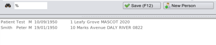
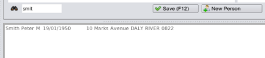

Finding Patients
There are two options when searching for patients
Display All Patients

By clicking on the little search icon a list of all patients will appear in the patients list box. This is
not recommended as your database could have many thousands of patients. This is equivalent to typing the wildcard character
'%' in the search textbox (which is also shown above in the picture).
Selecting patients by pre-defined criteria

There are a number of inbuilt queries mechanisms you can type into the patients search box, which is the little
textbox to the right of the binocular icon shown above.
- 'j smit' gives a list of all patients with firstname starting with 'j' and surname with 'smit'
- 'smith,' gives a list of all patients with surnames = 'smith'
- 'peter' gives a list of all patients with firstnames = 'peter'
- Surname, [Firstname] [sex] [age = < > [between]
- 'peter, age>50' gives a list of all patients with firstname peter, age over 50yrs
- 'mary' s=f age between 40-50 gives all 'mary's' aged between 40 and 50
If these fail to work please let us know as though the code is in place they may not yet be 'hooked up'.